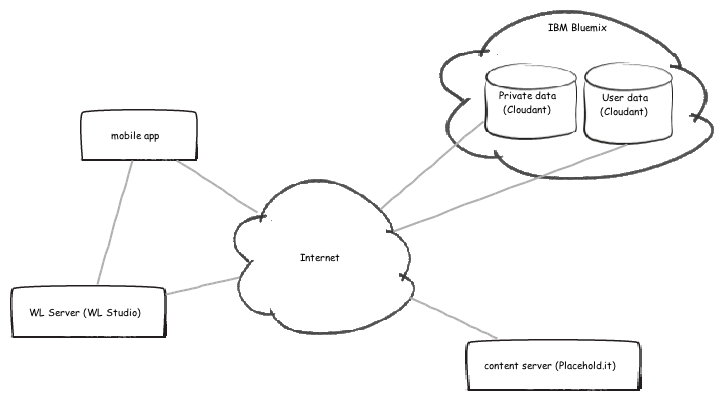

System overview
The interfaces to the system are represented by the User and by three external (to the pb.bank) systemSystem: a first server provides public content and a couple of databases that store authentication information and some kind of private data that can be accessed only pror to authentication to the app. The user, therefore, porvides to the system his credntials and receives both the public and the private content: let's aussume marketing campaigns / advertisements and information on account movements.

Of course, in real life, those systems are probably located within the organization or deployed to some hybrid/private cloud infrastructure. The resulting hihg level architecture would then take into consideration several DMZs where the system nodes would placed. The mobile app would reach the Worklight server (possibily decoupled by a proxy) who would in turn access via adapters the backend systems.

If you decide to give this starter app a try; chanche are, instead, that you will be using a setup similar to mine here. This starter app will run on your version of the Worklight Studio and will access a couple of Cloudant DB services hosted on IBM Bluemix that can be accessed via WL Adapters just like if you were calling backend services returning JSON data. To simulate a content provider I have chosen to use a site Placehold.it that returns placeholder images.

So, to get started, you only need to grab a free license for Worklight Studio and to register for free on the Bluemix cloud if you want to create your own databases. Otherwise you can use the ones that I have set up. Refer to the source code for a valid userid, password and pin.
Have fun!